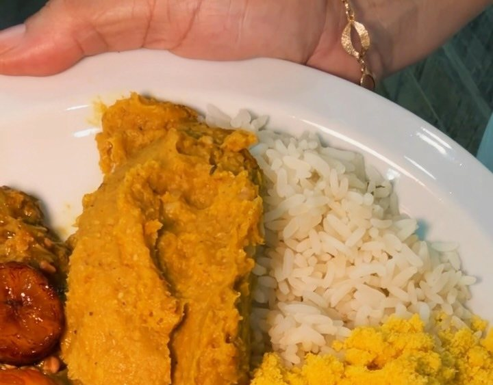

Início · Comida baiana e kits
Comida baiana por pessoa, por quilo e em kit
Caruru, vatapá, feijão fradinho, xinxim e moquecas no dendê. Para o almoço de hoje ou para a encomenda da data.
Por pessoa
O prato completo, para 1, 2 ou 3
Escolha a proteína e o prato vem com caruru, vatapá, feijão fradinho, farofa, arroz e banana da terra frita.
Com frango
Frango cozido no dendê com camarão seco, amendoim e castanha. R$ 60,90 · R$ 120,90 · R$ 179,90.
Com moqueca de camarão
Camarões no leite de coco com azeite de dendê. R$ 80,90 · R$ 159,90 · R$ 235,90.
Com moqueca de siri catado
Siri catado no dendê e leite de coco. R$ 80,90 · R$ 159,90 · R$ 235,90.
Com moqueca mista
Siri catado e camarões. R$ 80,90 · R$ 159,90 · R$ 235,90.

Panelas
Para completar a mesa
- Vatapá · 500 g R$ 57,90 · 1 kg R$ 113,90
- Caruru · 500 g R$ 57,90 · 1 kg R$ 113,90
- Feijão fradinho · 500 g R$ 53,90 · 1 kg R$ 103,90
- Xinxim de frango · 500 g R$ 63,90 · 1 kg R$ 120,90
- Moqueca de camarão, de siri ou mista · 500 g R$ 118,90 · 1 kg R$ 235,90
- Farofa de dendê 500 ml R$ 28,00 · Arroz 500 ml R$ 18,00
Kits
O caruru da família, de uma vez
Kit 1 · R$ 178,90
500 g de vatapá, 500 g de caruru, 500 g de feijão fradinho e 250 ml de farofa.
Kit 2 · R$ 339,90
1 kg de vatapá, 1 kg de caruru, 1 kg de feijão fradinho e 500 ml de farofa.
Os dois estão no cardápio com o “+”: dá para colocar na sacola e mandar pelo WhatsApp.
Encomendas
Setembro, Sexta-Feira Santa e outras datas
Em 2025, o Correio listou o Sabor da Zu entre as casas para encomendar comida baiana pelo WhatsApp, inclusive o caruru de setembro. Em setembro de 2026, a casa abriu o domingo 27 com comida baiana no salão.
Encomendar pelo WhatsAppDúvidas frequentes
Perguntas comuns
Com quanto tempo devo encomendar?
A casa não publica prazo: mande a data na mensagem e ela confirma.
As panelas vêm com acompanhamento?
Não. As panelas de 500 g e 1 kg são porções sem acompanhamento.
Tem bobó ou moqueca vegetariana?
Não estão no cardápio atual da loja on-line: consulte pelo WhatsApp.
Peça agora
Comida baiana de família, direto no seu WhatsApp.
Monte o pedido, mande a mensagem e combine entrega ou retirada com a casa, sem comissão de aplicativo.